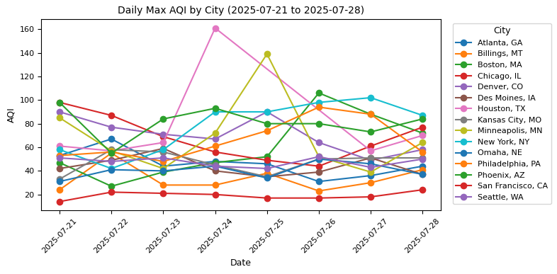
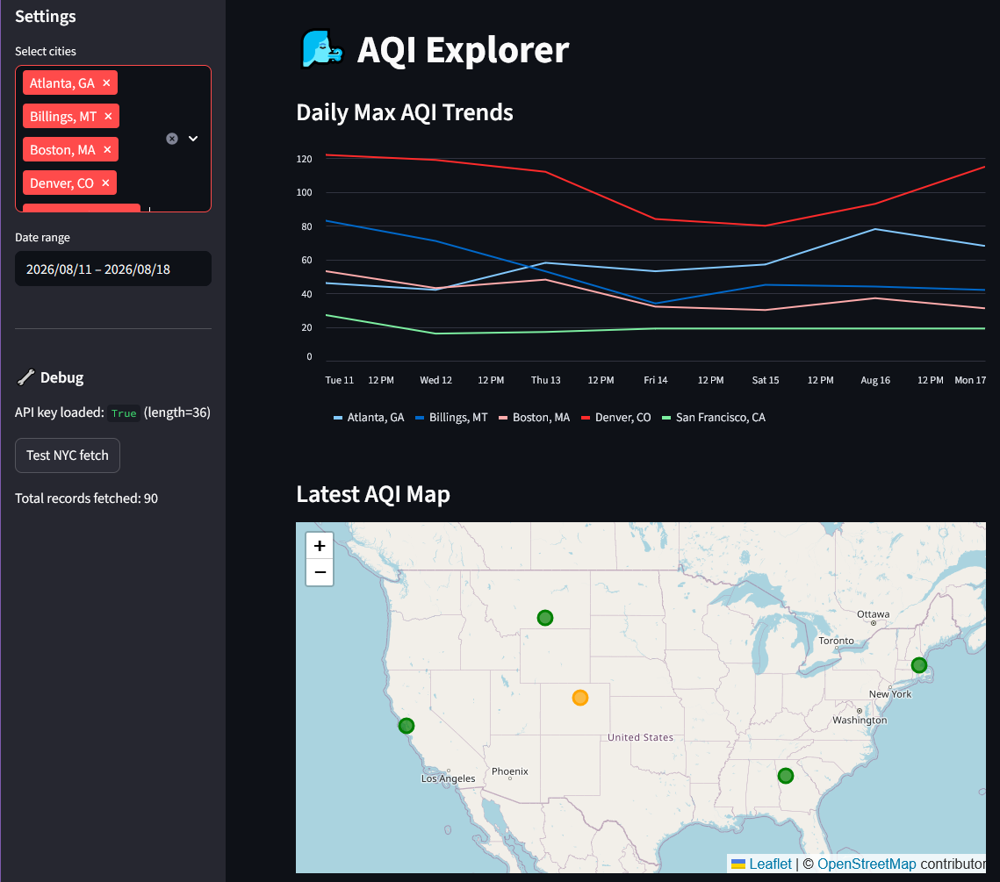

Case Study — Environmental Data
A year of EPA air quality readings across U.S. cities, turned into an interactive map and time-series dashboard. Built as a full pipeline from raw API pulls to a deployed web app.
The problem: air quality data from the EPA is public, but it's scattered across per-city, per-pollutant API calls, not something a non-technical person can glance at to answer "is the air bad where I live, and is it getting worse?"
The goal: build a pipeline that pulls a full year of readings for six major pollutants, PM2.5, PM10, O₃, NO₂, SO₂, and CO, across multiple cities, reduces them to a single daily max AQI per city, and puts that on a map anyone can explore over time.
Ingest via the AirNow API. Fetched historical readings for multiple ZIP codes across a full year, using environment variables to keep the API key out of source control.
Aggregate with pandas. Rolled up raw pollutant readings into a single daily maximum AQI per city, the standard way AQI is reported to the public.
Visualize two ways. Built static time-series plots in Matplotlib to compare trend lines across cities, and a Folium map with a time slider so the same data could be explored geographically, day by day.
Ship it as an app. Wrapped the analysis in a Streamlit interface with city and date selectors and deployed it live.
Data engineering, not just analysis: this project is the pipeline itself, API ingestion, error handling and data validation on daily updates, and aggregation logic.
Geospatial storytelling: the animated time-slider map makes pollution trends visible at a glance in a way a table of AQI numbers never could.
Built to be extended: the repo's roadmap includes weather-data correlation, automated weekly refresh via GitHub Actions, and threshold-based alerting.

Daily Max AQI by City
AQI Interactive App